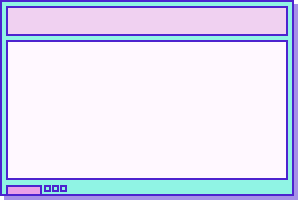

† Poketter †
LIVE v2.2
⏮
▶
⏭
--
🔊
存档:
默认存档
+
Followers
999K
Stress
42
Affection
78
Darkness
55
LIVE
👁
12,847
watching
KAngel Ch.
●
Webcam
▼

Poketter
Diary
JINE
[ F7 ] 戳一戳 ✨
--
📡 只读模式 · GitHub Pages
All
Diary
JINE
推博 / Poketter
─
□
✕
0
TRASH
💾 存档管理
✕
＋ 新建存档
取消
创建